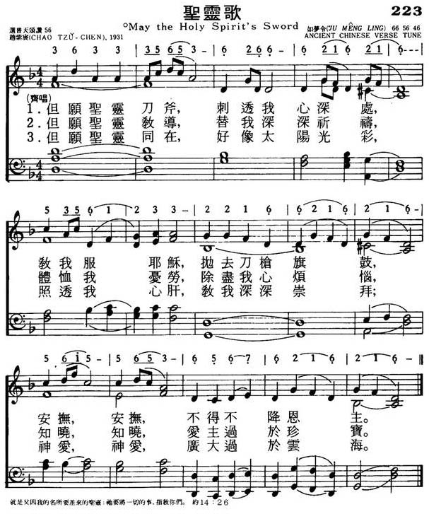
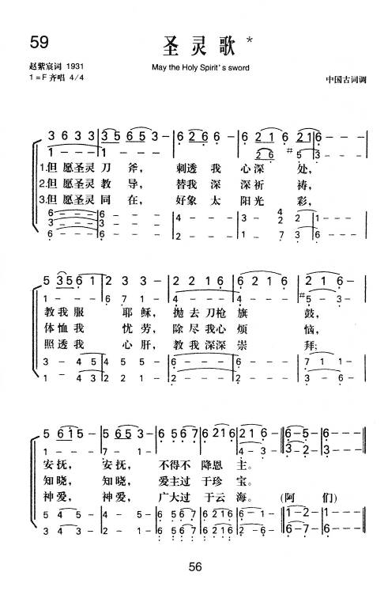

|
|
|
|
|
但願聖靈刀斧，刺透我心深處， 教我靠耶穌，拋去刀槍旗鼓， 安撫，安撫，使我降服恩主。 但願聖靈教導，替我深深祈禱， 體恤我憂勞，除盡我心煩惱， 知曉，知曉，愛主過於珍寶。 但願聖靈同在，好像太陽光彩， 照透我心肝，教我深深崇拜； 神愛，神愛，廣大國於雲海。 阿們！ |
|
https://www.mred365.cn/szxg/7226.html


|
|
|
|
|
-

-
圣灵歌-
新编赞美诗442首
-
059圣灵歌
Chinese Psalms Holy Bible
-
LX1850
May The Holy Spirit'S
Sword
223圣灵歌
[華]
圣灵歌
May the
Holy Spirit's sword 赵紫宸詞；
調名：如梦令
JU MENG LING
范天祥編
82.
https://hymnary.org/text/may_the_holy_spirits_sword
Tune: JU MENG
LING Printable scores: PDF
Audio files: Recording
K03A
普天頌三位讚重要編輯與作者
赵紫宸、杨荫浏和刘廷芳
一九三零年以后，中国圣诗逐步多起来，并且出现了一些优秀的圣诗作者和翻译，如赵紫宸、杨荫浏和刘廷芳都是三十年代著名的圣诗作者（刘廷芳以翻译圣诗为主）。他们的作品，数量之多和质素之高都是前所未有的。赵紫宸作词八首，翻译六首；杨荫浏作歌词八首，作曲四首，翻译圣诗一百多首；刘廷芳翻译和修改的歌词一百多首。
一九三七年，爆发了中日战争。同年，上海、南京相继沦陷；广州于一九三八年、香港于一九四一年也都沦陷。抗战持续了八年。一九四五年中日战争结束后，内战又接踵而来。长期局面的动荡对圣诗的创作和出版影响甚大。一九四九年，中国大陆解放后，国内在长达三十年的时间内，对宗教采取了极端的政策，教会都无法生存，圣诗创作就更不用说了！
詩歌賞析: 第59首
圣灵歌* May
the Holy Spirit's sword*
赵紫宸詞；“如梦令” 范天祥編
经文：“但保惠师，就是父因我的名所要差来的圣灵，他要将一切的事指教你们，并且要叫你们想起我对你们所说的一切话”(约14：26)
《圣灵歌》原见于赵紫宸(事略参阅第30首)所创作的《民众圣歌集》第
11首。据赵紫宸在该集序言里说：民歌要简单浅白，老少皆宜，雅俗共赏。但又不必完全迁就民众；有时候，也要想法提高民众的思想与观感。这首调是以
中国词牌一“如梦令”吟唱时所用的曲调，经范天祥
(事略参阅第31首)配和声而成。乐曲可以齐唱主调，以器乐、钢琴或风琴伴奏；或以女高音独唱，其他三部分声部闭嘴以“呣”音伴唱。曲调深沉，尤以末句，真有刺透心灵深处之感。
趙紫宸（1888－1979）[編輯]
| 趙紫宸 | |
|---|---|
 |
|
| 性別 | 男 |
| 出生 | 1888年2月14日 大清浙江省德清縣 |
| 逝世 | 1979年11月22日 |
| 教育程度 | |
| 信仰 | 基督教 |
| 配偶 | 童定珍 |
| 兒女 | 趙蘿蕤、趙景心、趙景德、趙景倫 |
趙紫宸（1888年2月14日－1979年11月21日），男，浙江德清人，中國基督教新教神學家、教育家，歷任東吳大學文學院院長、燕京大學宗教學院院長，又曾擔任1948年8月普世基督教協進會成立大會的6位主席之一[1]。翻譯家趙蘿蕤的父親。
生平[編輯]
1888年2月14日（清光緒十四年正月初三日），趙紫宸出生在浙江省德清縣的一個小商人家，父親趙炳生。13歲（1901年）時，因家道中落，曾輟學預備隨父從商。15歲（1903年）再入學，入讀蘇州的教會學校萃英書院，接受西式教育。之後轉入東吳大學附屬中學，並考入監理會辦的東吳大學。1907年，他受世界基督教學生同盟總幹事約翰•穆德（John R. Mott）及東吳大學校長孫樂文（D. L. Anderson）影響，受洗成為基督徒。1910年，東吳大學畢業，趙氏留校在東吳中學任教。[2][3]
1914年，趙紫宸代表在華的監理會前往美國奧克拉荷馬州參加美南監理會總會會議。同年秋，他進入監理會背景的田納西州范德堡大學的大學宗教學院，主修社會學及哲學，1916年獲社會學碩士學位，1917年獲神道學學士學位，並獲頒授「創辦人獎章」。1917年，學成回國，在東吳大學任教授。1922年升任教務長，並兼任文學院院長。同年出席清華大學舉行的「第11屆世界基督教學生同盟」、上海的「基督教全國大會」及在牯嶺舉行的「全國立志佈道團第一次全國大會」。[2][4]
1926年，趙紫宸應燕京大學校長司徒雷登之邀，由東吳大學轉職燕京大學，擔任宗教學院教授，兼任中文系教授。根據1936年出版的《中華民國二十五年度．私立東吳大學文理學院一覽》記載，他在1926年於東吳大學25周年紀念典禮上，獲母校授予「榮譽博士」銜。1928年，升任職燕京大學宗教學院院長，直至1952年大學結束，共26年。1941年7月，趙紫宸在香港被聖公會何明華會督按立為聖公會會長（牧師），他正式由監理會轉入中華聖公會，華北教區主教聘他為華北教區任會長。同年12月8日，珍珠港事件發生數小時後，日本憲兵隊包圍燕京大學，趙紫宸等11位教授被捕，趙氏被日軍囚禁至1942年6月18日始獲釋。[5]
抗戰勝利後，他恢復燕京大學宗教學院院長的職務，兼任中國文學教授。1947年，趙紫宸獲美國普林斯頓大學頒授榮譽神學博士學位。1949年9月，趙氏成為中國基督教界五位代表之一，參加了中國人民政治協商會議第一屆全國委員會會議。之後他成為基督教三自愛國運動發起人之一，1954年當選為中國基督教三自愛國運動委員會常務委員。但自1951年開始的「三反五反運動」，以及1966年至1976年的「文化大革命」中，他遭受殘酷迫害。1979年11月21日在北京病逝，享年91歲。[4]
家庭[編輯]
1905年，17歲的趙紫宸奉父母之命，與19歲的童定珍結婚，童氏為小商人之女，未曾接受教育。二人育有三子一女：女兒趙蘿蕤、長子趙景心、次子趙景德、三子趙景倫。
著作[編輯]
- 燕京研究院編：《趙紫宸文集（卷一）》。商務印書館，2003。ISBN 9787100036962。
- 燕京研究院編：《趙紫宸文集（卷二）》。商務印書館，2004。ISBN 9787100039857。
- 趙紫宸 :《基督教進解》. 香港 : 基督教輔僑出版社, 1947. （頁面存檔備份，存於網際網路檔案館） 基督教文藝出版社藏書, 香港浸會大學圖書館. 華人基督宗教文獻保存計劃.
- 趙紫宸 :《神學四講》. 香港 : 基督教輔僑出版社, 1955. （頁面存檔備份，存於網際網路檔案館） 基督教文藝出版社藏書, 香港浸會大學圖書館. 華人基督宗教文獻保存計劃.
- 趙紫宸 :《聖保羅傳》. 香港 : 基督教輔僑出版社, 1956. （頁面存檔備份，存於網際網路檔案館） 基督教文藝出版社藏書, 香港浸會大學圖書館. 華人基督宗教文獻保存計劃.
- 趙紫宸 :《耶穌傳》. 香港 : 基督教輔僑出版社, 1965. （頁面存檔備份，存於網際網路檔案館） 基督教文藝出版社藏書, 香港浸會大學圖書館. 華人基督宗教文獻保存計劃.
- 趙紫宸 , 范天祥:《民眾聖歌集》. 上海 : 廣學會. （頁面存檔備份，存於網際網路檔案館） 基督教文藝出版社藏書, 香港浸會大學圖書館. 華人基督宗教文獻保存計劃.
參考文獻[編輯]
https://zh.wikipedia.org/wiki/%E8%B5%B5%E7%B4%AB%E5%AE%B8
如夢令 詞牌 [編輯]
《如夢令》，詞牌名，又名《憶仙姿》、《宴桃源》、《如夢令》，單調，三十三字，七句、五仄韻、一疊韻，上去通押。
異名[編輯]
宋蘇軾詞注稱，此曲本後唐莊宗李存勖創制，名為《憶仙姿》。因嫌其名不雅，因此詞中有「如夢、如夢」疊句，故改稱《如夢令》；周邦彥又因此詞首句有「曾宴桃源深洞」，改名《宴桃源》。另因沈會宗詞有「不見、不見」疊句，故又名《不見》；因張輯詞有「比著梅花誰瘦」句，故又名《比梅》。另有《古記》、《無夢令》、《如意令》等異名。
詞牌格式[編輯]
| 維基文庫中相關的原始文獻：如夢令 |
註：平表示平聲，仄表示仄聲，仄表示本仄可平，平表示本平可仄，粗體表示韻腳。
正體[編輯]
單調三十三字，七句、五仄韻，第五、六句例用疊句。
例詞
- 曾宴桃源深洞，一曲舞鸞歌鳳。長記別伊時，和淚出門相送。如夢，如夢。殘月落花煙重。
- 門外迢迢行路。誰送郎邊尺素。巷陌雨餘風，當面濕花飛去。無緒。無緒。閑處偷垂玉著。
- 昨夜雨疏風驟，濃睡不消殘酒。試問捲簾人，卻道海棠依舊。知否？知否？應是綠肥紅瘦。
- 常記溪亭日暮，沉醉不知歸路。興盡晚回舟，誤入藕花深處。爭渡，爭渡，驚起一灘鷗鷺。
- 萬帳穹廬人醉，星影搖搖欲墜。歸夢隔狼河，又被河聲攪碎。還睡，還睡，解道醒來無味。
參考文獻[編輯]
- 清·王奕清 等.《欽定詞譜》. 中國書店. 2010年1月出版. ISBN 9787806637470.
曾宴桃源深洞 一曲舞鸞歌鳳 長記別伊時 和淚出門相送 如夢 如夢 殘月落花煙重
中仄中平中仄韻中仄中平中仄韻中仄仄平平句中仄中平中仄韻中仄韻中仄疊中仄中平中仄韻
臘半雪梅初綻 玉屑瓊英碎翦 素豔與清香 別有風流堪羨 苞嫩 蕊淺 羞破壽陽人面
仄仄仄平平仄韻仄仄平平仄仄韻仄仄仄平平句仄仄平平平仄韻平仄韻仄仄韻平仄仄平平仄韻
疑是水晶宮殿 雲女天仙寶宴 吟賞欲黃昏 風送一聲羌管 煙淡 霜淡 月在畫樓西畔
平仄仄平平仄韻平仄平平仄仄韻平仄仄平平句平仄仄平平仄韻平仄韻平仄疊仄仄仄平平仄韻
學道非難非易 怎敢已而不已 專下死功夫 悟得長生活計 長生活計 收得精光神氣
仄仄平平平仄韻仄仄仄平仄仄韻平仄仄平平句仄仄平平仄仄韻平平仄仄疊平仄平平平仄韻
秋千爭鬧粉牆 閒看燕紫鶯黃 啼到綠陰處 喚回浪子閒忙 春光 春光 正是拾翠尋芳
平平平仄仄平韻平平仄仄平平韻平仄仄平仄句仄平仄仄平平韻平平韻平平疊仄仄仄仄平平韻
炎暑尚餘八日 火老金柔時節 聞道間生賢 儲秀降神崧極 無敵 無敵 當代人倫準的
中仄中平仄仄韻仄仄中平中仄韻中仄中平平句中仄中平平仄韻平仄韻平仄疊中仄平平中仄韻
射策當為第一 高躍龍門三級 榮看綠袍新 帝渥必加寵錫 良弼 良弼 真箇國家柱石
中仄平平仄仄韻中仄平平平仄韻平仄仄平平句中仄中平中仄韻平仄韻平仄疊中仄仄平中仄韻